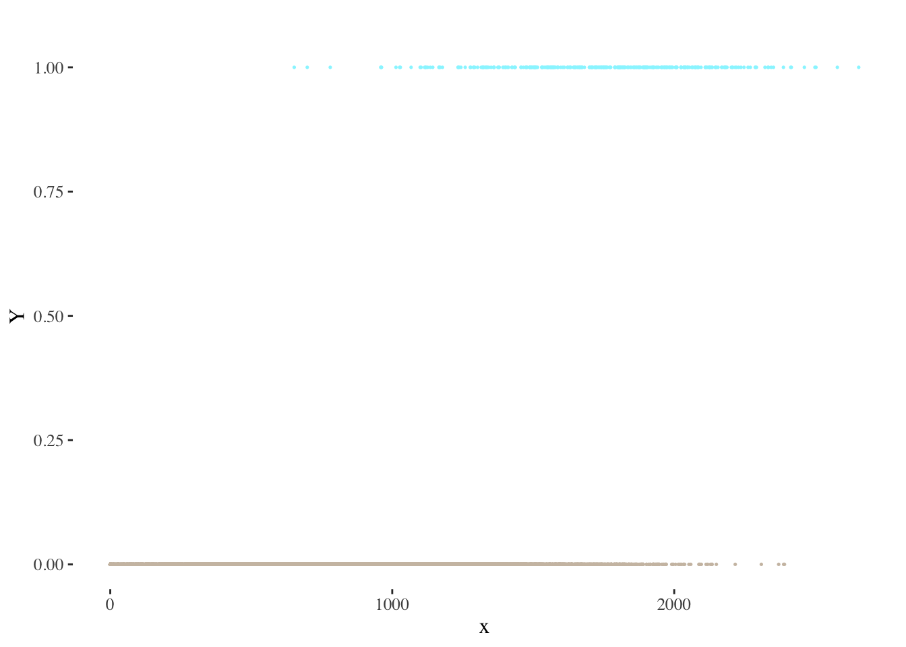

Logistic Regression
class notes
Building a logistic regression model
The linear regression model discussed in previous classes assumes that the dependent variable Y is quantitative. The logistic regression model will help us in those situations where Y is qualitative and our aim is to compute the probability of each observation belonging to each possible category of Y. The process of predicting qualitative responses is known as classification (since it involves assigning the observation to a category or class) (James et al. 2013).
Why can’t we use a linear regression in a classification problem?
Drawing on the synthesis proposed by Molnar (2022), the main reasons why linear regression is not suitable in this context are:
A linear model does not output probabilities, and thus, interpreting its results in such a manner is incorrect.
A linear model also extrapolates and gives you values below zero and above one1.
Since the predicted outcome is not a probability, but a linear interpolation between points, there is no meaningful threshold at which you can distinguish one class from the other.
Consider, for example, a problem where \(Y\) presents two distinct categories (represented here with values 0 and 1):
Each observation will belong to one of these categories, and therefore present values of either \(Y = 1\) or \(Y = 0\).
Suppose we tried to model the relationship between \(x\) and \(Y\) using a linear regression model. The following visualization provides a depiction of the results we would obtain through linear regression:
The problems mentioned above are clearly illustrated: how could we interpret predicted values below zero? How could we define a threshold to classify our predictions as belonging to each category?
Formula. Coefficient interpretation
Instead of the linear equation we used when building a linear regression model, in this case we will make use of the logistic function, which constrains our output (the probability of \(x\) belonging to one of \(Y\)’s categories) between 0 and 1:
\[ P(x)= \frac{e^{\beta_0 + \sum\limits_{j=1}^p \beta_j X}}{1+e^{\beta_0 + \sum\limits_{j=1}^p \beta_j X}} \]
A logistic curve2 typically exhibits the following shape:
By employing this method, we effectively address the problem of obtaining probabilities outside the range of 0 to 1.
Following a series of transformations, we can arrive at the following expression:
\[ \frac{P(x)}{1-P(x)}= e^{\beta_0 + \sum\limits_{j=1}^p \beta_j X} \]
The quantity \(\frac{P(x)}{1-P(x)}\) is called the odds (probability of event divided by probability of no event3), and can take on any value between \(0\) and \(\infty\). Values of the odds close to \(0\) and \(\infty\) indicate very low and very high probabilities of \(x\), respectively4.
Finally, by taking the logarithm of both sides of our last expression, we arrive at:
\[ \log {\frac{P(x)}{1-P(x)}}= \beta_0 + \sum\limits_{j=1}^p \beta_j X \]
The left-hand side is the logarithm of the odds and is referred to as the log-odds or logit5.
Recall from previous classes that in a linear regression model, \(\beta_{j}\) indicates the average change in \(Y\) associated with a one-unit increase in \(x_{j}\). On the other hand, in a logistic regression model, increasing \(x_{j}\) by one unit changes the log-odds by \(\beta_{j}\), as shown in the last formula presented (James et al. 2013).
In order to properly interpret the model’s coefficients, you should keep in mind that the relationship between \(P(x)\) and \(x\) in is not a straight line6: the amount that \(P(x)\) changes due to a one-unit change in \(x\) depends on the value of \(x\). However, a basic interpretation rule to remember is that, regardless of the value of \(x\) (James et al. 2013):
if \(\beta_{j}\) is positive then increasing \(x_{j}\) will be associated with increasing \(P(x)\)
if \(\beta_{j}\) is negative then increasing \(x_{j}\) will be associated with decreasing \(P(x)\)
A graphical representation of the logistic curves we would obtain in simple logistic regressions with different values of \(\beta\):
On the other hand, a change in a feature \(x_{j}\) by one unit (\(\Delta x_{j} = 1\)) in a logistic regression results in a change in the log-odds of the event by an amount equal to the coefficient \(\beta_{j}\) associated with that feature.
Categorical predictors
One can also use categorical predictors in the logistic regression model. However, in order to incorporate qualitative variables into regression analysis, we must first transform them into numerical values by creating dummy variables.
Let’s start with the simplest case: a binary qualitative variable that can only take on two categories (e.g., a sex variable indicating whether a person is male or female7). In this case, we will assign a value of 1 to indicate the presence of the attribute represented by one of the variable’s possible values (for example: to be male), and 0 to represent the absence of the attribute (for example: not to be male). The group identified with a 0 is referred to as the base or reference category (in this case, females).
For a qualitative variable with \(n\) categories, we will need to create \(n−1\) dummy variables that take on values of 0 or 1 (the base category will be the same for all dummy variables).
In terms of coefficient interpretation, if the coefficient \(\beta_{j}\) associated with the dummy variable is positive, the group identified by the dummy variable has a greater possibility of being classified as \(Y=1\) (that is to say, a bigger \(P(x)\)) than the reference category.
Statistical significance
How can we test if the relationship between \(x\) and \(Y\) is statistically significant or not? We can formulate a hypothesis test with the following hypotheses (James et al. 2013):
\(H_{0}\): “There is no relationship between \(x\) and \(Y\)”
\(H_{A}\): “There is a relationship between \(x\) and \(Y\)”
We will consider the relationship between \(x\) and \(Y\) to be statistically significant when the p-value of the test is close to 0.
Model assumptions
The logistic regression model involves a series of underlying assumptions regarding the variables involved. It is therefore fundamental to assess the following main assumptions before drawing conclusions from a regression analysis (Harrison and Pius 2020):
Binary dependent variable (the number of outcomes or categories is two).
Independence of observations.
Linearity of continuous independent variables and the log odds outcome.
No multicollinearity (that is to say, explanatory variables should not be highly correlated with each other).
Generalization: multinomial logistic regression
We sometimes wish to classify a response variable that has more than two classes. It is possible to extend the two-class logistic regression approach to the setting of \(K > 2\) classes (James et al. 2013).
For these purposes, we will resort to the softmax regression. Note that this classifier should only be used with dependent variables that have \(K\) mutually exclusive classes. For each observation, this model essentially computes a score for every class of the dependent variable and, based on this information, defines the most probable class for each observation using a softmax function8.
Evaluation and predictions
Keep in mind that the model’s output will consist of the probabilities associated with each observation belonging in each category of the dependent variable. In this context, to translate this output into a classification, we must establish a threshold beyond which each observation will be assigned to a specific category. The threshold is often set at \(0.5\), but its determination may vary depending on the specific nature of the problem we are addressing9 (James et al. 2013).
On the other hand, recall from previous lessons that models can be classified into two main categories (James et al. 2013):
Inference: these models aim to understand and describe the relationships and patterns within a given data set.
Prediction: these models are used in situations where we have a set of inputs \(X\), but obtaining the output \(y\) is not feasible. The aim of these models is to generate accurate predictions of \(y\).
Logistic regression models are mainly considered inference models, but are still frequently used for predicting purposes. Fundamentally, this can be explained by the fact that gaining insights regarding the relationships between variables might constitute an important first step when building or improving a predictive model.
Confusion matrix
A confusion matrix is a fundamental tool used to assess the model’s performance in classification tasks. It provides a clear and concise representation of the model’s ability to make correct and incorrect predictions. The confusion matrix is a 2x2 matrix that categorizes the model’s predictions into four categories: True Positives (TP), True Negatives (TN), False Positives (FP), and False Negatives (FN).
**Predicted value**
|
||
|---|---|---|
| **Actual value** | 1 | 0 |
| 1 | True Positive | False Negative |
| 0 | False Positive | True Negative |
| Source: @james2013 | ||
For a dependent variable with two categories (1 and 0):
True Positives are those observations where the model correctly predicts positive outcomes: \(Y_{Act}=1\) and \(Y_{Pred}=1\)
True Negatives are those where it correctly predicts negative outcomes: \(Y_{Act}=0\) and \(Y_{Pred}=0\)
False Positives are instances where it incorrectly predicts positive outcomes: \(Y_{Act}=0\) and \(Y_{Pred}=1\)
False Negatives are instances where it incorrectly predicts negative outcomes: \(Y_{Act}=1\) and \(Y_{Pred}=0\)
By examining the values within the confusion matrix, we can gain insights into the model’s strengths and weaknesses, and therefore improve fundamental parameters such as the decision threshold.
Some performance metrics such as the following can guide our analysis:
Sensitivity \(= \frac{TP}{P} = \frac{TP}{TP + FN}\)
Specificity \(= \frac{TN}{N} = \frac{TN}{TN + FP}\)
False positive rate \(= \frac{FP}{N} = \frac{FP}{TN + FP}\)
Accuracy \(= \frac{TN + TP}{N+P} = \frac{TN + TP}{TN + FP + TN + FP}\)
Precision \(= \frac{TP}{TP+FP}\)
Negative predictive value \(= \frac{TN}{TN+FN}\)
Each of these metrics will help us quantify the performance of our model by highlighting different strengths and weaknesses. For example, does the model excel at identifying true positives? (analyze sensitivity!) At the expense of an elevated rate of false positives? (analyze false positive rate!)
Other representations
ROC curves
The ROC curve graphically illustrates two types of errors for all potential decision thresholds, depicting the trade-off that emerges when trying to correctly identify true positive cases while also avoiding incorrect predictions of the positive class when the actual class is negative. Sensitivity is depicted on the y-axis, and the false positive rate is represented on the x-axis (James et al. 2013).
An ideal ROC curve should closely follow the top-left corner of the visualization, signifying high sensitivity and a low false positive rate. The overall performance of a classifier is given by the area under the ROC curve (AUC). ROC curves will prove to be specially useful when comparing different classifiers, since they consider all possible thresholds (James et al. 2013).
Hosmer-Lemeshow plot
The Hosmer-Lemeshow plot is a graphical tool used to assess the goodness of fit of a logistic regression model. The basic principle behind this plot is that, within a group of observations, we can expect a good-fitting model to produce predicted probabilities that are similar to the observed proportion of \(Y=1\) values within that group (Nahhas, n.d.).
This assumption is tested by splitting the data into 10 groups based on their predicted probabilities and then, within groups, comparing the observed and expected proportions. The first group will contain the 10% of observations with the lowest predicted probabilities, the second the 10% with the next lowest, and so on. If the model fits well, the observed proportions of \(Y=1\) in these groups should be similar to their within-group average predicted probabilities (Nahhas, n.d.).
Discussion
It is worth noting that classification models might reinforce prejudices, and we should therefore always interpret their outputs with care. If a model’s training data contains biases or reflects historical inequalities, the model may inadvertently perpetuate these biases by making predictions based on these patterns.
For instance, consider a scenario where historical loan default data shows a higher default rate among individuals from marginalized groups. Based on this information, a model will probably recommend denying loans to individuals from these groups, perpetuating long-standing disparities in access to financial opportunities.
While explicit prohibitions against the use of variables like race are established to curb discrimination and uphold fairness, paradoxically, they often prompt the adoption of proxy or surrogate variables, such as neighborhood, education, income, or ZIP code, to indirectly capture the information originally linked to the prohibited variable.
This workaround practice exemplifies the enduring challenge of preventing models from mirroring historical inequities. Hence, it becomes imperative to place a strong emphasis on how we interpret the results generated by these models, considering the potential biases embedded in these proxies to ensure a more equitable and just decision-making process.
References
Harrison, Ewen, and Riinu Pius. 2020. R for Health Data Science. 1st ed. Chapman & Hall/CRC Statistics in Social and Behavioural Science. Boca Raton: Taylor; Francis.
James, G, D Witten, T Hastie, and R Tibshirani. 2013. An Introduction to Statistical Learning with Applications in r. 2nd ed. Springer.
Molnar, Christoph. 2022. Interpretable Machine Learning: A Guide for Making Black Box Models Explainable. Second edition. Munich, Germany: Christoph Molnar.
Nahhas, Ramzi W. n.d. Introduction to Regression Methods for Public Health Using r. https://www.bookdown.org/rwnahhas/RMPH/.
Footnotes
Remember that probabilities can never fall outside the range of 0 to 1!↩︎
To be more precise: a sigmoid curve.↩︎
For example, odds of 4 would mean it is 4 times more likely for an event to happen than for it not to happen.↩︎
For example:
For \(P(x) = 0.2\): \(\frac{P(x)}{1-P(x)} = \frac{0.2}{0.8} = 0.25\)
For \(P(x) = 0.8\): \(\frac{P(x)}{1-P(x)} = \frac{0.8}{0.2} = 4\)
For \(P(x) = 0.98\): \(\frac{P(x)}{1-P(x)} = \frac{0.98}{0.02} = 49\)↩︎This expression highlights the fact that the logistic regression model has a logit that is linear in \(x\) (James et al. 2013).↩︎
See the first equation of this section, where we first presented the relationship between \(P(x)\) and \(x\).↩︎
This would be a dataset that omits or invisibilizes, for example, intersex people.↩︎
A function used to convert a vector of \(K\) real numbers into a probability distribution of \(K\) possible outcomes.↩︎
Fundamentally, this will depend on the type of error we want to avoid. Consider, for example, a model that predicts whether a tumor is benign or malignant. Misclassifying a malignant tumor as benign is much more detrimental to the patient’s health than the reverse scenario. Therefore, in this case, instead of classifying tumors with a probability of 0.5 or higher of being malignant as malignant, we might classify those with a probability greater than 0.1 of being malignant as malignant.↩︎